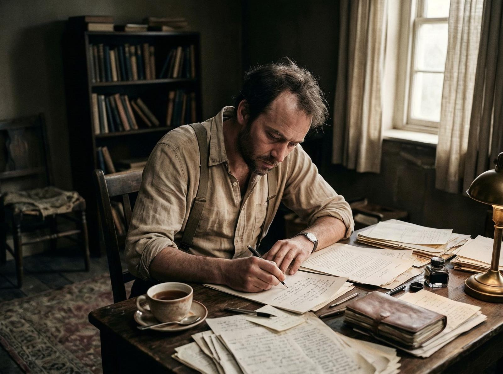

La 11 ani, William James Sidis a susținut o prelegere la Harvard despre patru corpuri spațiale în dimensiuni. Părea un copil, dar vorbea ca un matematician experimentat. Până la vârsta de șase ani, învățase deja limbi latină, greacă, franceză, germană și rusă. Până la opt, a creat o nouă limbă. Până la 11, a devenit cel mai tânăr student din istoria Harvard.
Și totuși a ales să dispară.
Lumea nu era pregătită pentru un copil ca el, dar asta nu l-a oprit. Tatăl său, Boris Sidis, era un psiholog care credează în dezvoltarea timpurie a inteligenței. A crescut William cu metode radicale — educație intensivă, disciplină strictă, presiune constantă. Rezultatul a fost un copil care putea rezolva probleme matematice la nivel universitar la vârsta de șapte ani.
Dar geniul vine cu un preț. William a devenit faimos pentru inteligența sa, dar a urât faima. Ziarele au scris despre el, publicul l-a privit ca pe o curiozitate, colegii l-au oprit. Nu era un copil normal — era un spectacol, o atracție, un experiment.
Tensiunea centrală a vieții lui William Sidis a fost lupta între geniu și anonimat. Inteligența sa era un dar, dar și o povară. Voia să învețe, să descopere, să creeze, dar nu voia să fie în centrul atenției. Voia să trăiască, să muncească, să aibă o viață normală, dar geniul său nu îi permitea.
După absolvarea de la Harvard, a încercat să continue studiile la Rice University, dar a devenit dezamăgit. A plecat din universitate, a încercat să găsească un loc în societate, dar a eșuat. A lucrat ca profesor, dar a fost demis pentru că nu putea să relaționeze cu studenții. A lucrat ca funcționar, dar a devenit frustrat de munca repetitivă.

Finalul pe care puțini îl cunosc: în ultimii ani ai vieții, William a trăit sub numele fals. A vrut să dispară, să fie nimeni, să scape de eticheta "copil minune". A vrut să fie o persoană normală, cu o viață normală, chiar dacă normalitatea nu era posibil pentru el.
A murit în 1944, la 46 de ani, singur, într-un apartament din Boston. Nimeni nu a știut cine a fost cu adevărat. Nimeni nu a știut că fusese cel mai inteligent om din lume. Nimeni nu a știut că alesese să dispară.
După el, rămâne o întrebare: ce înseamnă geniu? E o binecuvântare sau o povară? E ceva de sărbătorit sau ceva de ascuns? William Sidis a avut o inteligență incredibilă, dar a ales să nu o folosească pentru faimă. A ales să dispară, să fie nimeni, să scape de eticheta.
Poate că a ales corect. Poate că anonimatul a fost singurul mod în care putea să trăiască. Poate că geniul nu e pentru faimă, ci pentru eliberare.